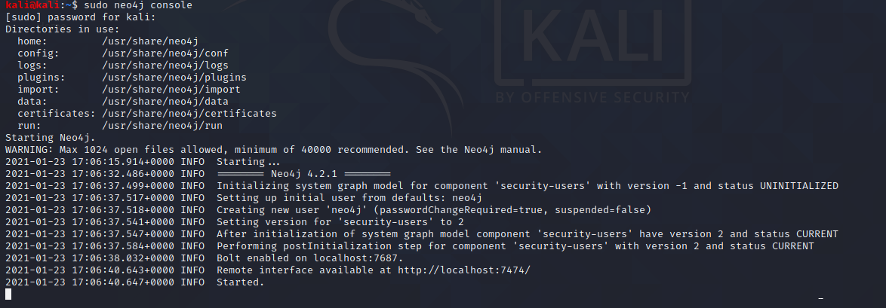

this will grab all data of AD
and will visualise the data in a graph
Bllodhound fuigures out the paths very fast whihc are actually complex paths
apt install bloodhound



changed the password and the passwor is :password
close browser window and thne open up new terminal
typed sudo bloodhound


now we ll pull down data from the machines